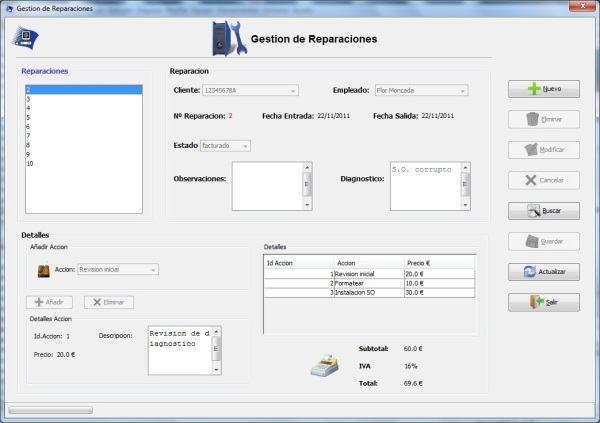

Gestion de Reparaciones
Gestion de Reparaciones
Desde el menu gestion de reparaciones se gestionaran las reparaciones del sistema
Se podra dar de alta,baja,editar y buscar reparaciones. El menu esta dividido en dos, una parte donde semostrara la informacion de la reparacion(numero de reparacion, cliente ,etc.) y otra parte
donde se mostraran las acciones de reparacion pudiendo añadir y eliminar acciones a cada reparacion
Imagen del menu Gestion de Reparaciones.

Las opciones del menu gestion de Reparaciones son:
- Nuevo : para dar de alta una nueva reparacion.
- Eliminar : Para eliminar una reparacion.
- Modificar : Para editar una reparacion (Solamente se podran modificar reparaciones en estado reparado o reparacion).
- Cancelar : este boton se habilita despues de un alta o una modificacion y sirve para cancelar un alta o modificacion.
- Buscar. : Para buscar una reparacion.
- Guardar : para guardar los cambios realizados.
- Actualizar : deshace todos los cambios sin guardar y actualiza la lista de reparaciones con los datos de la base de datos.
- Salir : Cierra el menu de gestion de Reparaciones.